Introduction
Inspiration
Accessibility
Usability
Learning
Evaluation I
Evaluation II
Resources
Appendices
Vanessa Wong
Through this portfolio, I want to show my viewers that I have fun and creative ideas when designing a website and can develop an interesting and responsive website. I enjoy choosing colours that fit the given theme and coming up with creative ideas that can “wow” the audience. Additionally, after having developed a website I wish to develop and pleasing my client, I love the feeling of satisfaction and achievement in the end.
I hope that the people who reach my portfolio are those who are looking for someone who has a creative mind and can design and develop a fun website of their wish.
I have designed and developed a website where viewers can easily navigate throughout the website via the navigation bar at the top. Additionally, the contents of each page are placed in the middle of the screen, where most of the contents are visible to the viewers immediately after entering the page, saving them the trouble of having to scroll to find the information they are looking for.
Inspirations
#1 Charles Bruyerre's portfolio
In terms of creativity and the development of the website, Charles Bruyerre's portfolio is definitely one of the most impressive ones out there, it has fun colours and designs, yet the contents are all displayed neatly on the pages. From his portfolio, I have learnt to make use of all the spaces on the screen, while displaying the contents orderly on the screen to avoid making my pages look messy.
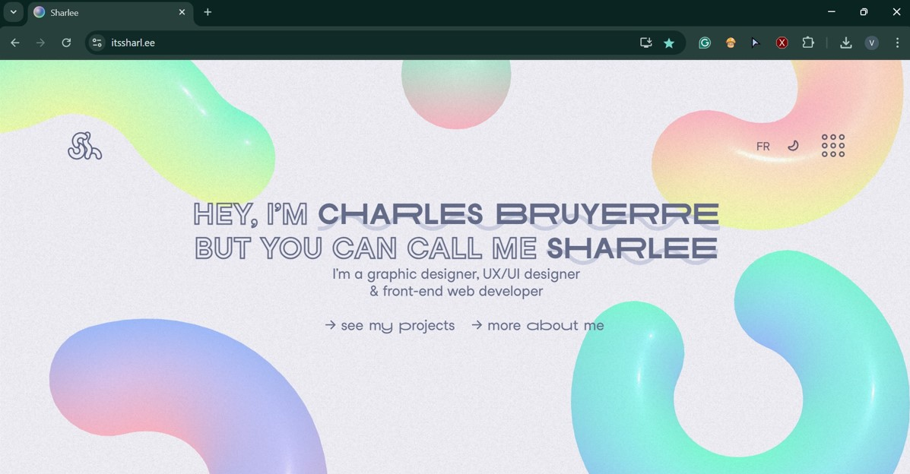
#2 Lynn Fisher's portfolio
Lynn Fisher’s portfolio leans towards a minimalistic background, but her use of font sizes and text decorations helps emphasise the contents of the pages. Additionally, projects and works are colourful and stand out from the rest of the page allowing the viewers’ attention to be directed to them. From her portfolio, I have learnt methods to make important points on the pages stand out more, and methods to allow viewers to know about clickable items on the page.
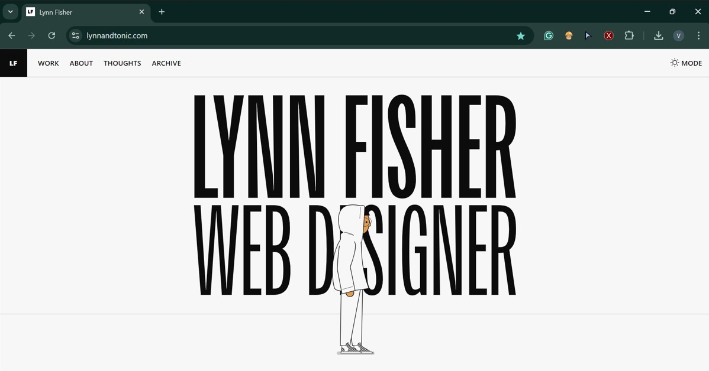
#3 Lauren Waller's portfolio
Lauren Walker’s portfolio is extremely informative and wordy, but not in a bad way. She provides detailed explanations about herself and her works, allowing viewers to understand her thought process while doing her projects and what her strong points are. From Lauren Walker’s portfolio, I have learnt what information I should provide in my portfolio and how to structure the details on each page.
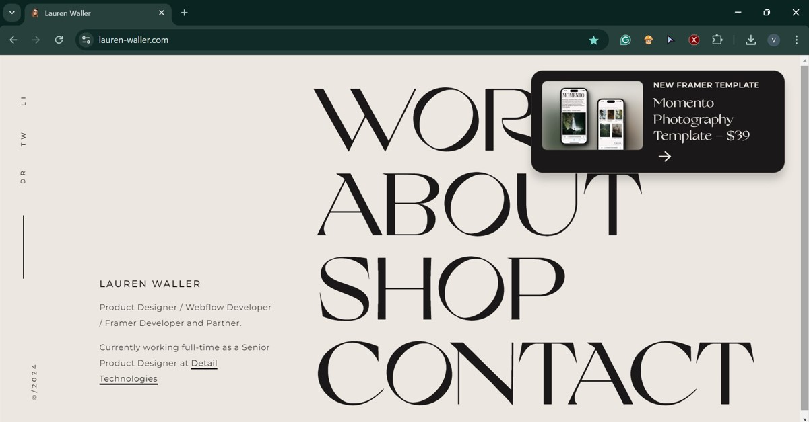
Accessibility
#1 Use of "alt" attributes
Firstly, the site uses alternative text (alt attributes) for all images which is useful for the visually impaired who are browsing the site and rely on screen readers. The format I used to label the images in the alt attribute is like so - *description of image* image. Hence, when the screen reader reads it, the listener would know that there is an image and what the image is showing.
#2 Use of semantic HTML5 tags
Secondly, the site employs semantic HTML5 tags, like “nav”, “main” and “footer”. These tags will help assistive technologies, like screen readers, better understand and navigate the structure of the web pages, providing a more accessible browsing experience.
For example, users are able to skip to the main content or find the navigation menu with ease.
#3 Clear & Consistent navigation and tab bars
Thirdly, the use of a consistent and easy-to-understand navigation bar lets viewers with cognitive disabilities quickly and easily understand and familiarise themselves with the navigation bar and tabs that are present on some pages, allowing them to navigate the site effectively. The navigation bar and tabs are also fixed at the top of the screen and in the pages respectively. Additionally, the background of the active page in the navigation bar would be a different colour from the rest of the pages, allowing viewers of the site to straight away know which page they are on.
Usability
#1 Intuitive Navigation
The website uses a clear menu structure ensuring the navigation menu is straightforward and organized, allowing viewers of the website to find information quickly. Descriptive labels are used for links and menus to make navigation intuitive. A consistent layout is maintained across all pages, so viewers know where to find navigation elements and content. This consistency helps them feel comfortable and confident as they browse the site. Additionally, the navigation bar and tabs use the same CCS format, which is having a font colour for the active page and tab while not having a colour for the inactive pages and tabs but instead outline (stroke).
For example, if the viewer of the site is on the experience page, the word “Experience” on the navigation bar would stand out from the other words/pages by having a font colour and a different background colour. Additionally, if the viewer is looking at my education details, the “Education” tab would have a font colour as it is the active tab while the “Work” tab would not have a font colour.
#2 Responsive Design
The navigation bar and tabs present on some of the pages can be navigated via the Tab and Enter keys, making the site accessible to viewers with motor disabilities or viewers who just prefer to browse the site using their keyboard. I had designed the user interface to display most, if not all, of the contents of the page on the screen without needing viewers of the site to have to scroll further down to move more. This allows the viewer to be able to navigate throughout the website and toggle the tabs using the Tab and Enter keys.
For example, on the “Experience” page, all education and work experience are displayed on the page without having to scroll up and down or left and right. Viewers would just have to toggle between the “Education” and “Work” tabs and they can do so with the Tab and Enter keys.
#3 Sufficient Contrast
While backgrounds have light colours, all fonts have either a dark colour or outline (stroke) to make the text stand out, making it easy for, not just viewers of the website with visual impairments, like colour blindness or low vision, but all viewers to read them. Additionally, alternating between the two background colours makes the pages look less dull.
For example, the main background colours are light blue for the body and light yellow for the navigation bar. However, having only light blue for the body throughout the website can be boring and grey. Therefore, I decided to make the music player on the “About” page and the sections on the “Experience” and “Project” page light yellow, the colour of the navigation bar.
Learning
#1 Transition & Animation
I decided to research and apply transitions and animations to my website to make it feel more fun. I felt that adding animations to the main content of every page and hover transitions to clickable links gives life to the website and makes the user experience less boring for viewers of the website. After much research on YouTube and W3Schools and trying and experimenting with different types of animations and transitions, I was finally able to choose the type of animation and transition that best fit my website.
I decided to give the pages a moving animation so that the text of the main content of each page would start slightly to the left (viewers’ right) of its original position and then smoothly slide to its original position, which is the middle of the page for the Home, About, and Contact pages and the middle of the box/container it is in for the Experience, and Project page.
As for the transition, I picked one to implement in the CSS of my website, more specifically, for the hover action. For the navigation bar and tabs in the Experience and Project pages, inactive pages and tabs would have no fill and only have an outline. Hovering over them would give them a fill that would appear with an ease-out transition. On the Home page, there are links that direct to the About, Project and Report pages. These links when hovered over will increase in front weight and will be underlined and these changes will appear with an ease-out transition too. Lastly, on the Contact page, when hovering over the “Send Message” button, a shadow around the button would appear, once again, with an ease-out transition.
#2 Music Player
With the help of a tutorial on YouTube on how to develop the music player, I learnt how to incorporate audio into my website. Additionally, as I had coded the music player separately in another folder before shifting it to my website, there were many “position”, “top”, “left” and “right” properties I had to edit to fit the music player nicely into the “About” page. It was my first time using those properties, hence, I had to do more research on them to know how they work.
I struggled with the JavaScript part of the music player the most as I followed the tutorial closely, but my music player would sometimes not work like the one in the tutorial. As I used different names for the class attributes from the tutorial video, it was harder to spot the parts where I coded wrongly. After going back and forth with the tutorial video, my music player was finally working as I wanted it to.
However, as mentioned before, I coded the music player on another folder first before shifting it to the actual folder of my website after it was working perfectly, this led to properties in my website code and music player code to clash and not work well together. The song image would appear out of the music image box and the text in the music player would be hidden behind the song image. To counter this CSS issue, I looked through the music player CSS code line by line and made edits to fit the music player into the About page. What is seen in the current About page is the perfectly integrated music player.
#3 Media Queries
Making a website responsive was something new to me, hence, I had to research and learn about ways to make a website responsive to various screen sizes. I thought the topic would be difficult for me to get a grasp on, however, thanks to a YouTube tutorial about CSS media query, within minutes, I could understand how I can make my website responsive with media queries.
Getting to know the basics was easy, but I had to figure out how I could include media queries into my code. While implementing them into my code, at first I felt a little stressed and confused as the content decreased in size when I did not want them to be and increased in size when I did not want them to. After much guess-and-check, I was finally able to get a hang of using media queries and my pages are now responsive and can fit into various screen sizes.
Although the current look does not look the best, I am satisfied with how it turned out considering it was my first time working with media queries. I do plan to study more on it so that the websites that I will be developing in the future will be even more responsive and professional.
Evaluation I
#1 Overall layout & Colour scheme
I am very satisfied with the final layout of the website; it is exactly as I had envisioned. I am also glad that my first choice of colour scheme looks good together on the website. Having accomplished the website, I have to thank the portfolio of Charles Bruyerre, Lynn Fisher and Lauren Walker as they gave me inspiration on how to design a fun and interesting website. Additionally, the research I had done and the video tutorials I followed for some functions in my portfolio website were very helpful in creating the website too.
#2 Navigation bar & Overall main content
The navigation bar does not have links to sub-pages as it directly leads to the page the viewer of the website wants to see. Additionally, the main content of every page is mostly already visible upon entering the page, eliminating the hassle of having to scroll to find specific information about myself. Viewers have to at most toggle between tabs on the Experience and Project page to view my different types of experience and projects respectively.
#3 Animation & Transition
I feel that the use of animation and transition gives a nice touch to the website as it helps make it nicer to look at when navigating to different pages and clicking on the links. Before having animation, the pages would change in an instant and would glitch a bit which was very ugly to see.
#4 Home page
I like the simple Home page. As there is not a lot of information on the Home page, viewers will have to explore the other pages to learn more about myself. By doing so, they can also know about my design style and development skills.
#5 Experience and Project pages
As the Experience and Project pages are quite content-heavy, I was afraid that the layout of the pages would look messy. However, thanks to the implementation of the pages that can be toggled between, I am happy with how neat the pages turned out to be. For the Experience page, after much thinking, I decided to use a table to display the contents neatly in rows and columns. For the Project page, I am glad I thought about shifting the tab menu to the left as it gives a fresh new look to the page, providing a more fun user experience.
#6 Music Player
The music player on the About page is a nice touch to the website as it provides audio, giving the viewer of the website more things to explore and increasing good user experience. It also adds content to the About page, making it look less boring and empty.
#7 Contact form
I am also very satisfied with the Contact page, more specifically, the contact form. I initially did not plan to include a contact form as my inspiration portfolios do not have them, but my lecturer advised me to have a form as it would be a “valuable improvement”, therefore, I decided to add it to the Contact page. I am glad I added it in as it would be the fastest way a viewer of my website can contact me. I followed two tutorial videos while creating the contact form, one video showed the HMTL and CSS portion while the other showed the JS portion. As the tutorial videos were easy to follow, I could complete coding the contact form with ease.
Evaluation II
#1 Animation
The only animation I have on this website is the main content text sliding into the middle of the webpage. Initially, I had thought of adding some moving objects animation in the background that moves slightly along with the mouse cursor, but based on the few tutorial videos I saw, it seemed like it would take me too long to learn how to implement it. Hence, it was my lack of time that limited my use of animation on my website. However, I will not let that stop me from learning more after this assignment is over. In future website developments, I want to add fun animations to my website to make my site look more fun and less boring and to improve user experience.
#2 Media Queries
As mentioned in “Learning”, CSS media query is something new to me. Hence, I am not yet very familiar with it, nor have I discovered the full potential of it. After this assignment, I plan to do more research on media queries and try using it more often to expand my use of it. After applying media queries to make this website responsive, even though it works, the site still looks weird when the screen is resized. Additionally, items that are too fixed together, like the music player on the About page, are confusing and difficult for me to understand how I can resize each part of them one by one. In the future when I add media queries to my website, I want to better implement it so that my website will look great on any screen size.
Resources
Music player tutorial
Mini Music Player in HTML CSS & Javascript | Mini Music Player in Javascript | Code With Harsh
Tabs tutorial
How to create Tabs using HTML, CSS, and JAVASCRIPT
Contact form tutorial - HTML & CSS
Create a Responsive Personal Portfolio Website Design using HTML CSS and JavaScript
Contact form tutorial - JS
How To Make Working Contact Form With JavaScript | Receive Form Data On Email
Media Query guide
Master Media Queries And Responsive CSS Web Design Like a Chameleon!
Appendices
Sitemap
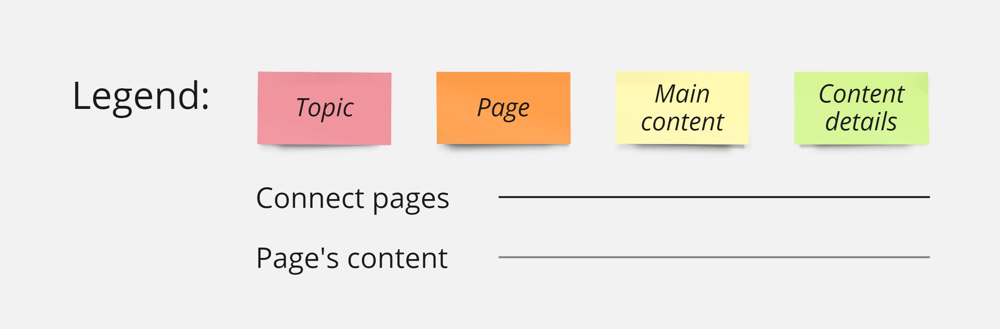
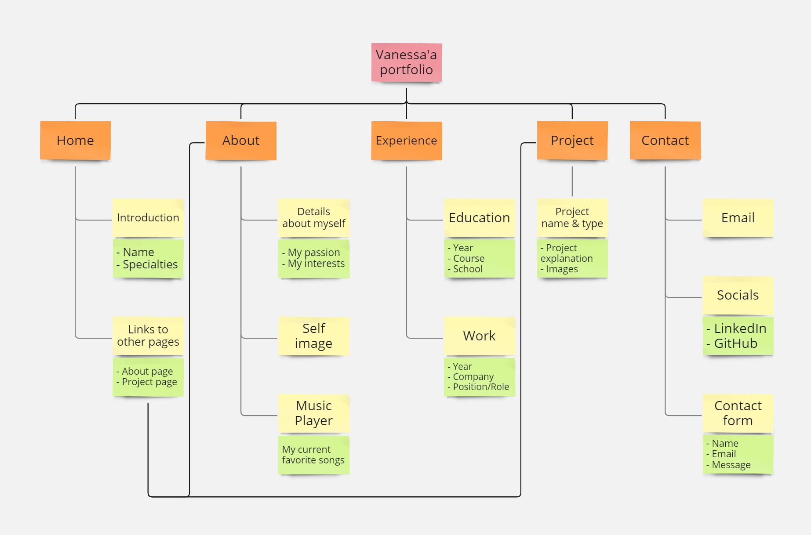
Colour palette
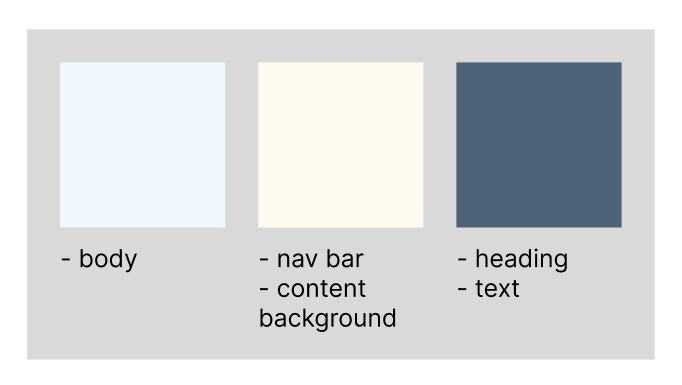
Wireframes
Mock-ups
Home page:
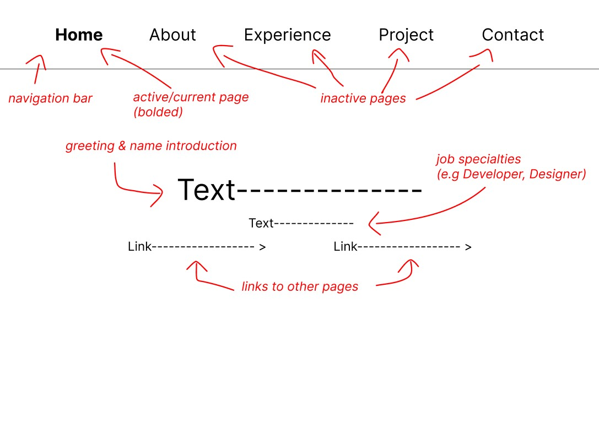
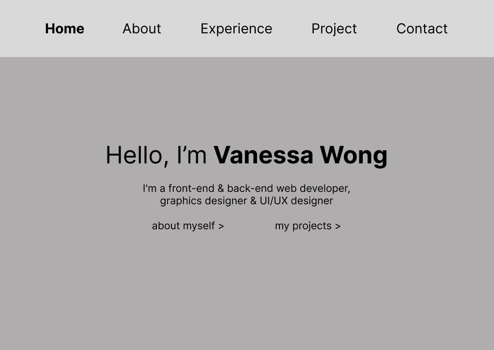
About page:
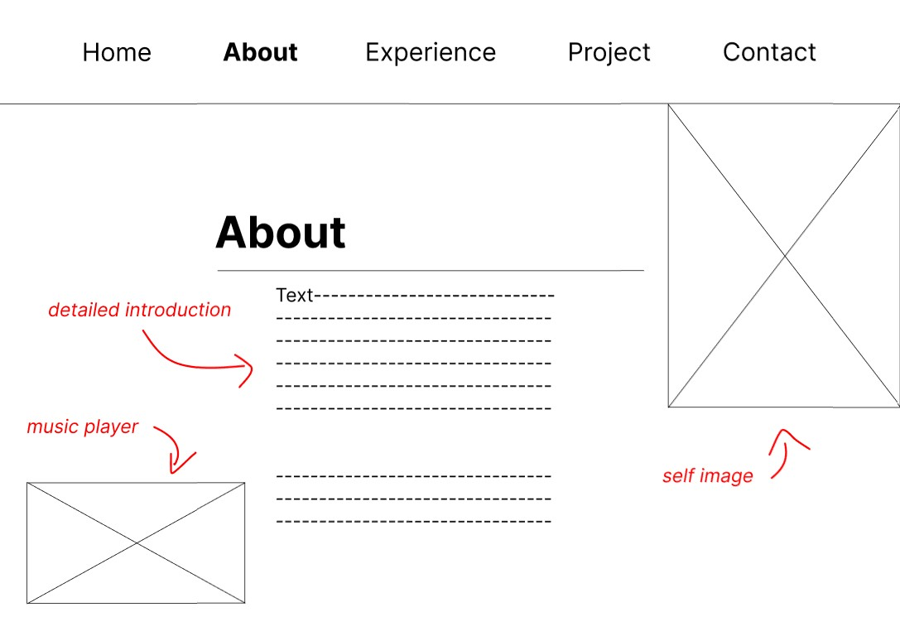
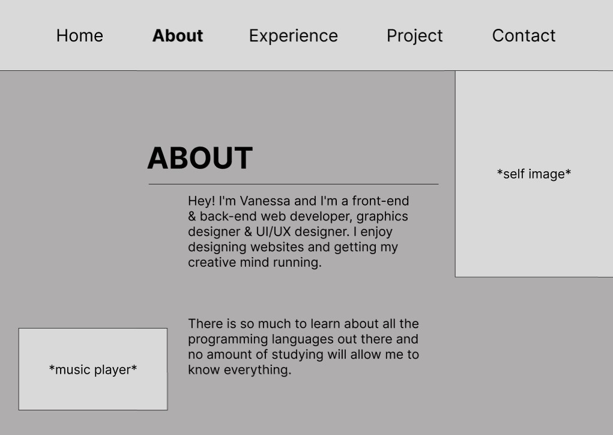
About page - Music player:
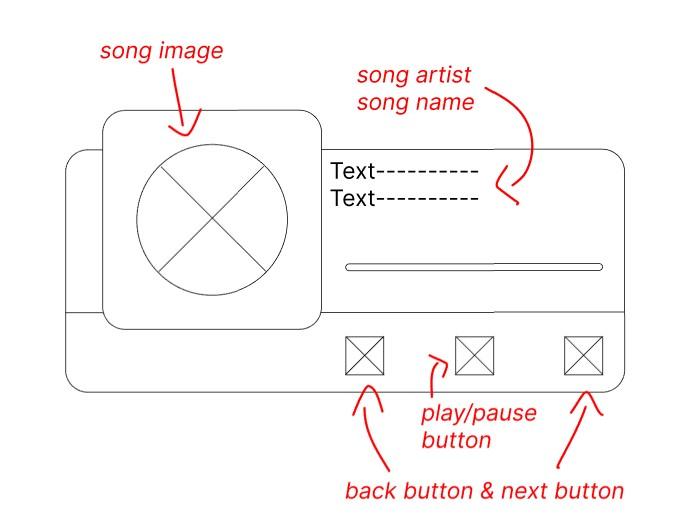
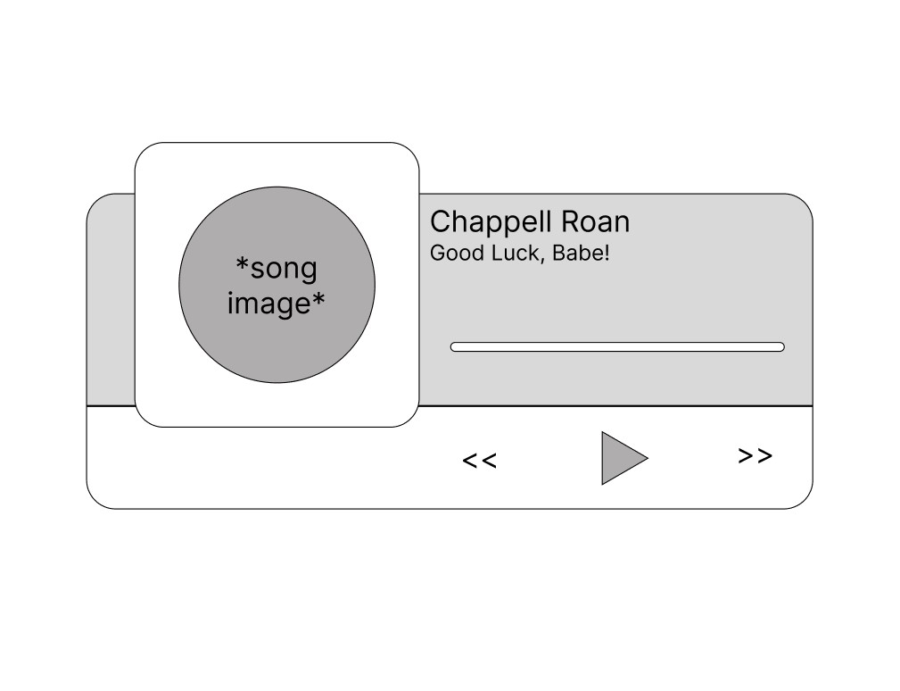
Experience page:
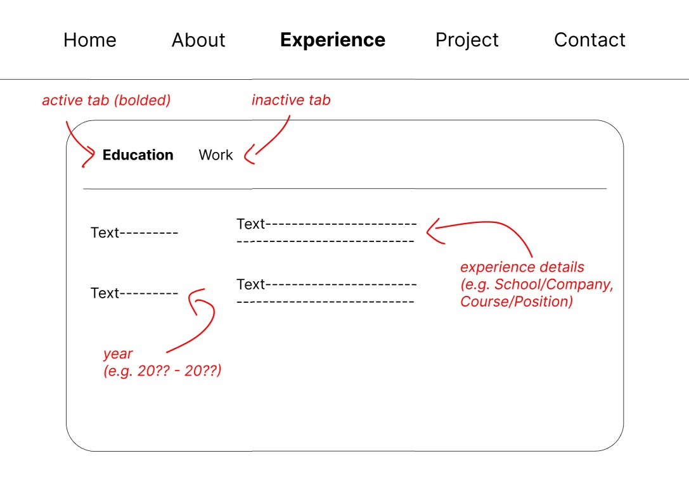
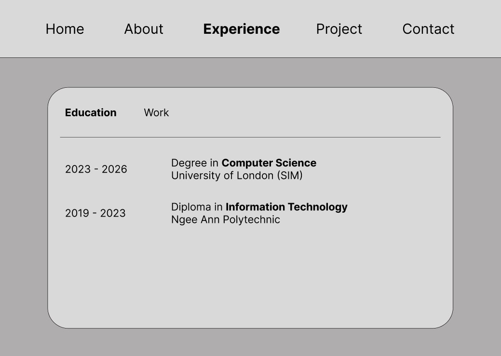
Project page:
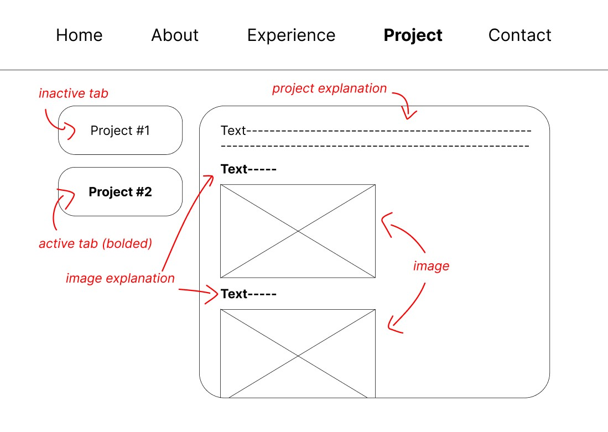
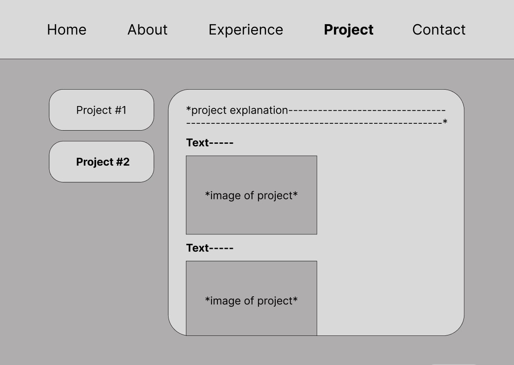
Contact page:
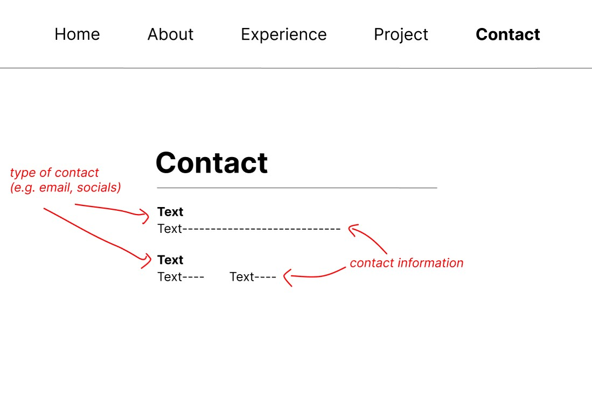
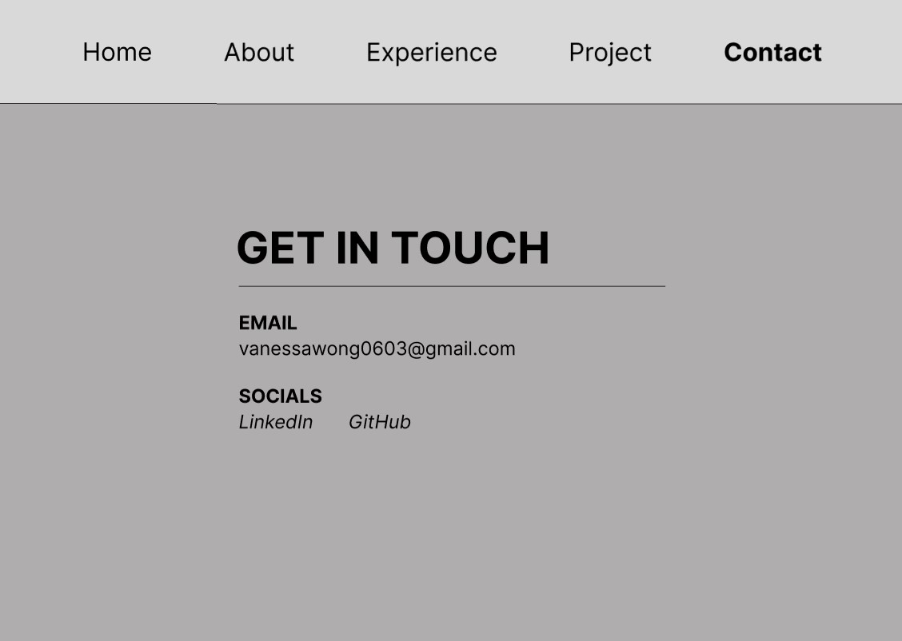